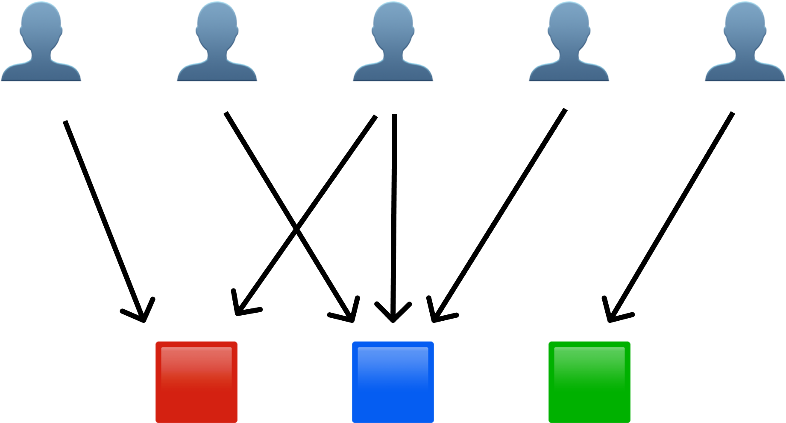
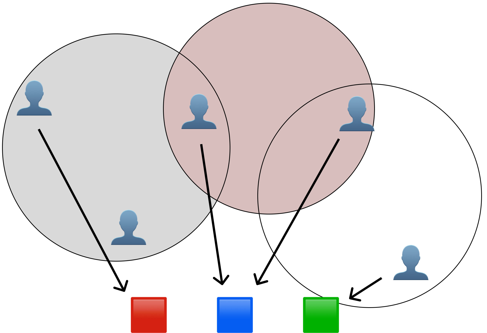
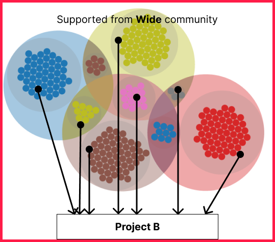

WTF is Plural QF
Plural QF (Plural Quadratic Funding) is the mathematically optimal way to fund public goods in a democratic community, which is advanced from Quadratic Funding, enhanced aim cooperation Across Differences.
background knowledge
- Pairwise
coordination subsidies: a new quadratic funding design by Vitalik Buterin
First idea of ajusting voting power based on participate's social distance on Quadratic Funding.
- Beyond Collusion Resistance:
Leveraging Social Information for Plural Funding and Voting by Joel Miller, E. Glen Weyl and
Leon Erichsen
Pluralistic and collusion-resistant mechanisms like Connection-Oriented Cluster Match to make QF
more socially equitable.
- How
Soulbound Tokens Can Make Gitcoin Grants More Pluralistic by Leon Erichsen
Why we need "Identity for Plurality" as a social graph oracle on Gitcoin
Let's simulate Plural QF in this case:
First idea of ajusting voting power based on participate's social distance on Quadratic Funding.
Pluralistic and collusion-resistant mechanisms like Connection-Oriented Cluster Match to make QF more socially equitable.
Why we need "Identity for Plurality" as a social graph oracle on Gitcoin
assume once we define social graph likes below
- Some cluster likes "L2", "DeFi", "NFT" and "Public Goods".
- Protted argents 0~6 in each cluster, some argents in multi cluster.
- you can simulate each argent's donation amount as input by slider. then you can see "Matched Amount" based on Plural QF fomula.

0
| Agent | Donation Amount | Matched Amount |
|---|
What's the Plural QF?
Nomal QF
Plural QF
Normal QF has essential risk from Collusion.
QF, originally designed to efficiently fund public goods, is now used by both private and public entities QF, while effective, is particularly vulnerable to collusion and Sybil attacks, in which individuals or groups exploit the system for their own benefit Initial proofs of QF's effectiveness are based on the assumption that participants are isolated, self-interested agents. Even under normal conditions of weak human cooperation, this assumption breaks down, suggesting that QF is suboptimal. Thus, QF is susceptible not only to explicit attacks, but also to normal human behavior that deviates from the original assumption.
Plural QF is using social diversity of participate, which minimizing the risk of collusion and more democratic way.
Pairwise Coordination subsidies 📐
Vitalik “Pairwise Coordination subsidies” (AKA Plural QF) in ethresearch at 2019. in this post, discusses a subsidy formula and proposes a new design that is more robust to the possibility of coordination between agents.
the design involves a local coefficient for each pair of agents and assumes that the amount of funds a specific pair of agents put towards the same projects is itself evidence of how coordinated they are.
Plural QF gradually increase cooperation across differences and mute contributions between homogeneous and more highly cooperative groups
TLDR;
